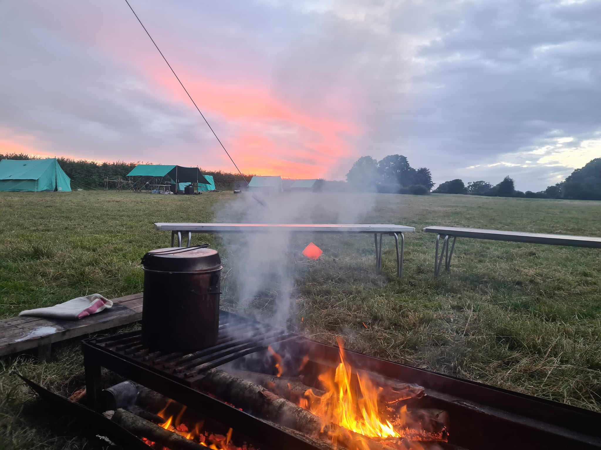
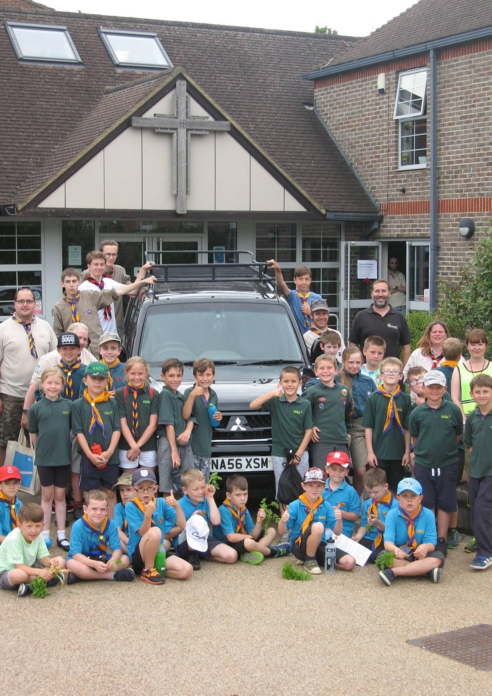
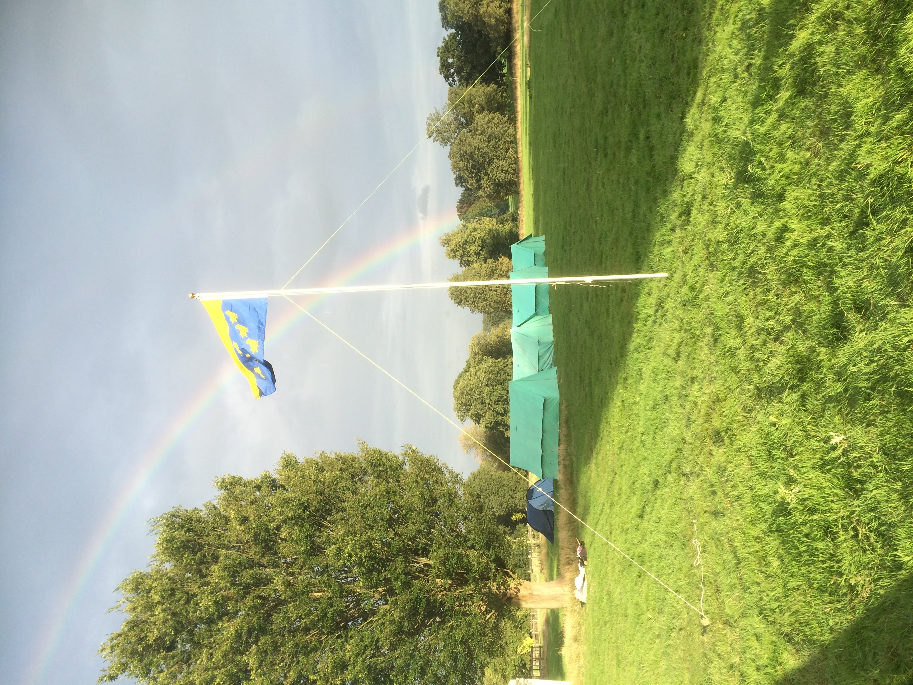
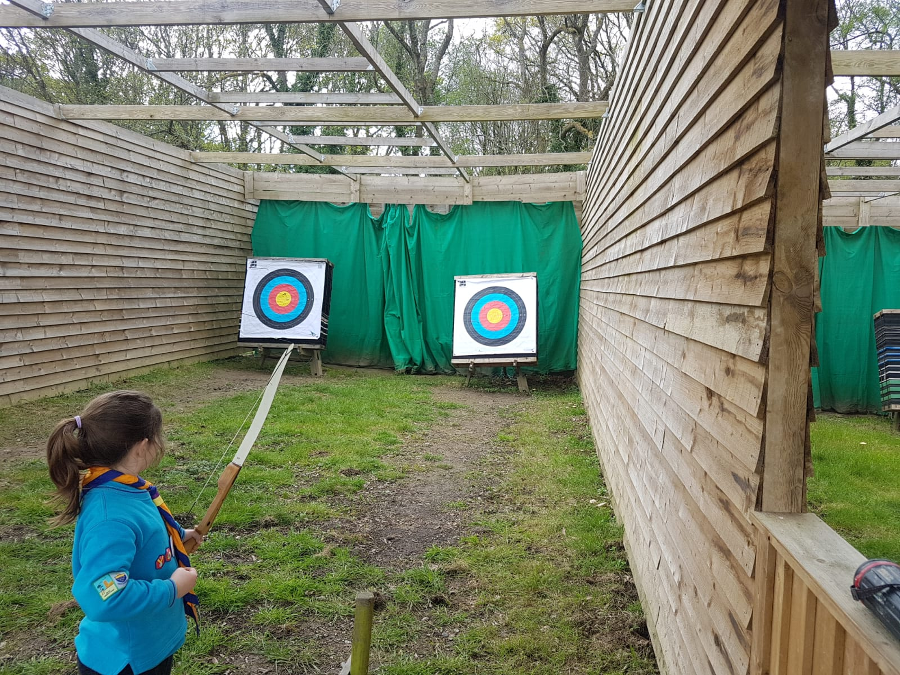

Welcome to the 4th East Grinstead Scout Group, a place where young adventurers thrive! Located at Trinity Methodist Church on Lingfield Road, we're excited to welcome young people aged 6 to 14 into our Beavers, Cubs, and Scouts sections.
At our Scout Group, we believe in nurturing young minds, fostering leadership skills, and creating unforgettable outdoor experiences. Whether it's camping under the stars, learning vital life skills, or building lifelong friendships, our group offers a world of opportunities.
Join us today and embark on a journey filled with fun, learning, and adventure. If you have any questions or want to get started, feel free to contact our Group Lead Volunteers: Billy Davis. Let's explore, learn, and grow together!
What Makes the 4th Unique.
Experience a one-of-a-kind Scouting journey with us! We do things a bit differently, from Beaver sleepovers to Cub and Scout camps in green fields, where we use traditional patrol tents and open fires. Our unique camping style is made possible by our awesome leadership team.